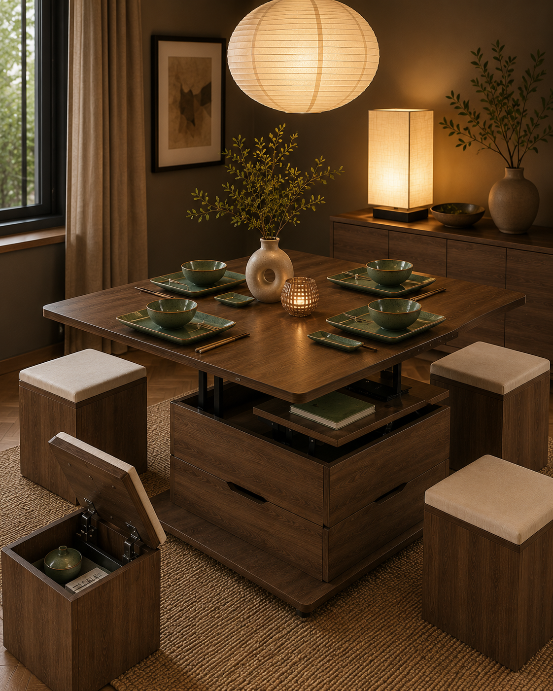

A small dining area does not need to feel cramped. With the right pieces, it can become one of the calmest and most useful corners of the home.
This Japandi-inspired look is built around a fold-away table with stools that tuck neatly underneath. It gives you a proper place to eat, work or sit with coffee, but it does not dominate the room when space is limited.
The green ceramic sushi set brings in a little colour while still feeling quiet and natural. Paired with warm Japanese-style lighting, a paper lantern shade and simple natural textures, the whole room feels soft rather than busy.
The trick is to choose fewer pieces, but make them work harder. A table with hidden storage, lighting that creates atmosphere, tableware that looks beautiful when left out and a natural rug to ground the space all help make a small dining room feel intentional.
It is a simple look, but that is why it works: practical furniture, warm light, natural materials and just enough detail to make the space feel personal.